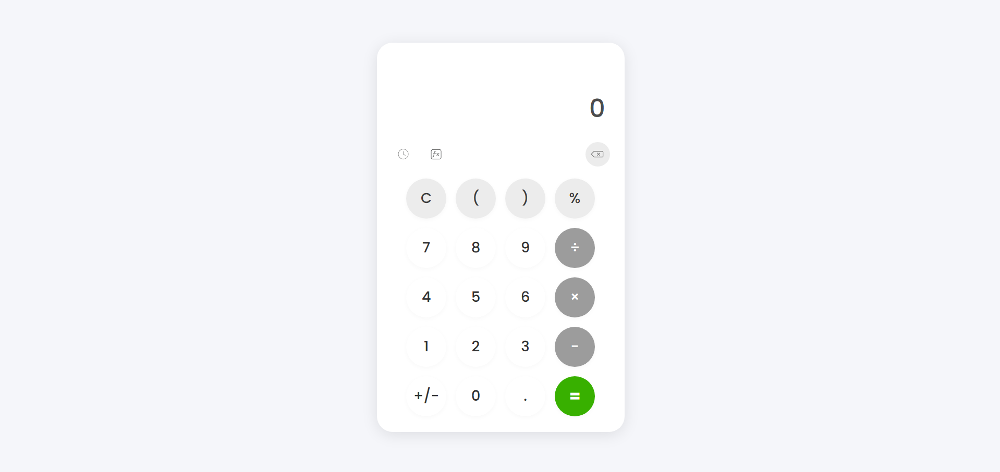
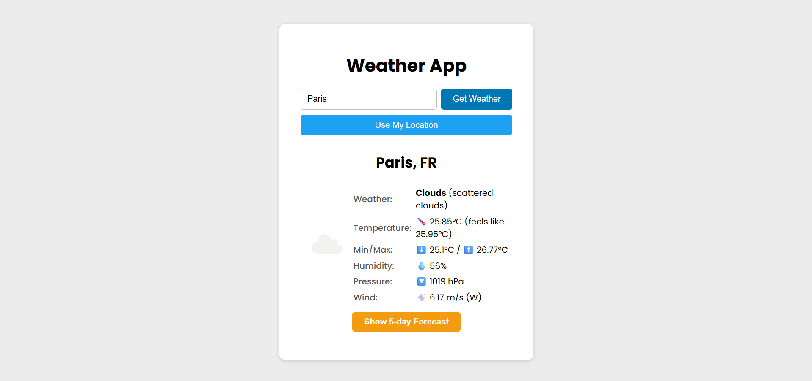

All Projects

To-Do List App
A modern and responsive to-do application. Features: customizable title, task date and time, localStorage persistence, and flexible sorting by name or date.
Tech: HTML, CSS, JavaScript

Calculator Web App
A minimalistic and responsive web calculator application. Features: clean interface, calculation history, icon-based controls, and full support for basic math operations.
Tech: HTML, CSS, JavaScript

Weather App
A modern weather application. Enter a city or use your location to view the current weather, detailed conditions (wind, pressure, humidity, etc.), and 5-day forecast.
Tech: HTML, CSS, JavaScript, OpenWeatherMap API